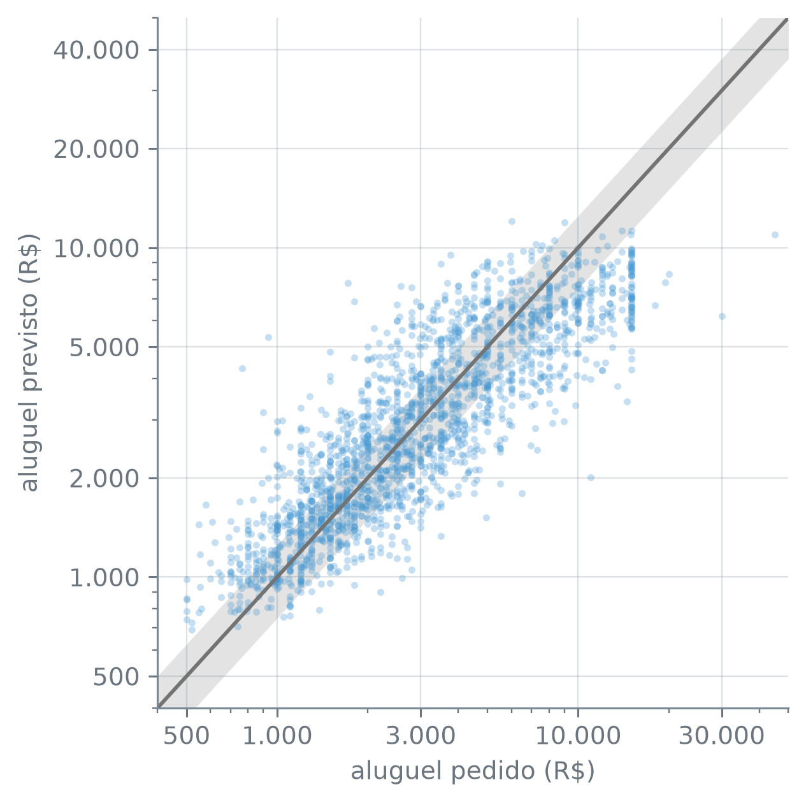
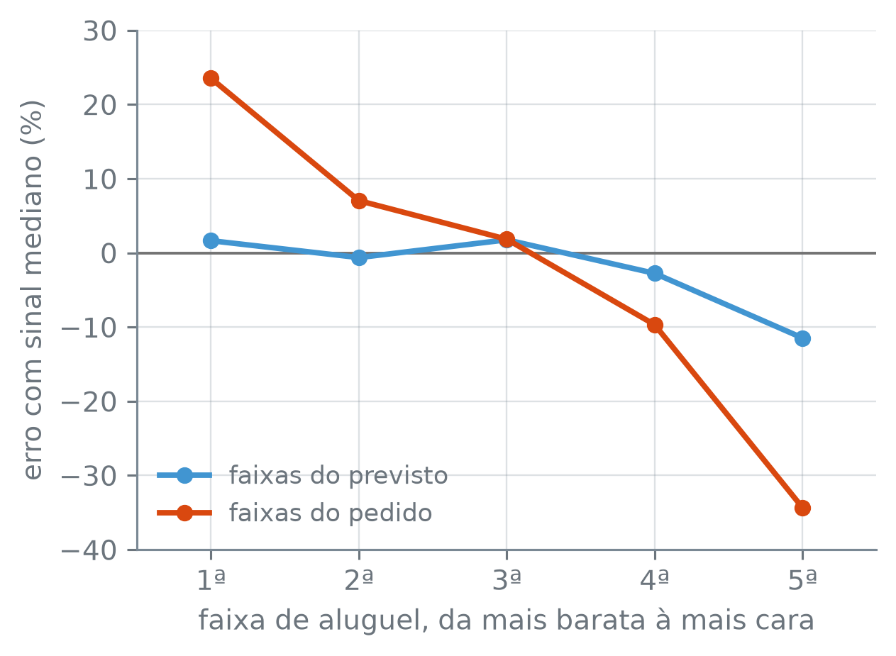

numero_br = lambda valor, casas=2: (
f"{valor:,.{casas}f}".replace(",", "_").replace(".", ",").replace("_", ".")
.replace("-", "−")
)Reportar: a Métrica Certa, e o que o Resultado Não Diz
Quem vai anunciar um imóvel quer saber: se o modelo sugerir R$ 3.000, quanto o aluguel pedido por imóveis parecidos pode estar longe disso? Em que unidade essa resposta deve ser dada, e o que ela não autoriza a concluir?
A função numero_br escreve os números com a pontuação brasileira:
O ponto de partida é o da seção 17.3: a tabela sem linhas repetidas, a divisão estratificada por cidade, os dez preditores, o logaritmo do aluguel como resposta e o preparo.
alugueis = pd.read_csv("dados/alugueis.csv", na_values=["-"]).drop_duplicates()
preditores = ["cidade", "area_m2", "quartos", "banheiros", "vagas", "andar",
"aceita_animal", "mobiliado", "condominio", "iptu"]
treino, teste = train_test_split(alugueis, test_size=0.2, random_state=17,
stratify=alugueis["cidade"])
X_treino, y_treino = treino[preditores], np.log(treino["aluguel"])
preparo = ColumnTransformer([
("categoricas", OneHotEncoder(handle_unknown="ignore", sparse_output=False),
["cidade", "aceita_animal", "mobiliado"]),
("assimetricas", Pipeline([
("log", FunctionTransformer(np.log1p, feature_names_out="one-to-one")),
("escala", StandardScaler())]), ["area_m2", "condominio", "iptu"]),
("andar", Pipeline([
("preenche", SimpleImputer(strategy="constant", fill_value=0,
add_indicator=True)),
("escala", StandardScaler())]), ["andar"]),
("contagens", StandardScaler(), ["quartos", "banheiros", "vagas"]),
]).set_output(transform="pandas")
print("X_treino:", X_treino.shape)X_treino: (8267, 10)O modelo é o da seção 17.5. O chunk abaixo refaz a busca e imprime o que ela escolheu:
grupos = KFold(10, shuffle=True, random_state=17)
knn = Pipeline([("preparo", preparo), ("modelo", KNeighborsRegressor())])
grade = {
"modelo__n_neighbors": list(range(5, 61, 5)),
"preparo__assimetricas__log": [
FunctionTransformer(np.log1p, feature_names_out="one-to-one"),
"passthrough",
],
}
busca = GridSearchCV(knn, grade, cv=grupos, scoring="neg_root_mean_squared_error")
busca.fit(X_treino, y_treino)
escolhido = busca.best_estimator_
com_log = not isinstance(busca.best_params_["preparo__assimetricas__log"], str)
print("k escolhido:", busca.best_params_["modelo__n_neighbors"])
print("com log:", com_log)
print("RMSE de validação cruzada:", numero_br(-busca.best_score_, 4))k escolhido: 25
com log: True
RMSE de validação cruzada: 0,4184O teste, uma vez
Todas as decisões foram tomadas: as linhas repetidas, as colunas excluídas, o preparo, o modelo, o k. Nenhuma foi escolhida pelo erro nos 2.067 anúncios guardados. Agora eles são abertos, e o modelo escolhido prevê cada um. Antes de ver a saída: o erro no teste deve sair acima ou abaixo do erro de validação cruzada?
X_teste, y_teste = teste[preditores], np.log(teste["aluguel"])
log_previsto = escolhido.predict(X_teste)
rmse_teste = root_mean_squared_error(y_teste, log_previsto)
print("anúncios de teste:", numero_br(len(teste), 0))
print("RMSE de validação cruzada:", numero_br(-busca.best_score_, 4))
print("RMSE no teste:", numero_br(rmse_teste, 4))
print("teste − validação:", numero_br(rmse_teste + busca.best_score_, 4))anúncios de teste: 2.067
RMSE de validação cruzada: 0,4184
RMSE no teste: 0,4159
teste − validação: −0,0025root_mean_squared_error(y, previsto) — o RMSE entre a resposta observada y e a previsto, a mesma conta do scoring="neg_root_mean_squared_error", sem o sinal trocado. Vem de sklearn.metrics.
Os dois números ficam próximos: 0,4159 no teste e 0,4184 na validação cruzada, uma diferença de −0,0025 (0,4159 − 0,4184). O teste saiu um pouco abaixo. Isso não mede quanto o erro de validação cruzada da seção 17.5 (o best_score_, com o sinal trocado) era otimista ou pessimista: o teste é um sorteio só de 2.067 anúncios, e ele também oscila. Quanto? Os dez grupos da validação cruzada dão uma ideia, porque cada um é um conjunto de anúncios que o modelo não viu:
i = busca.best_index_
por_grupo = pd.Series([-busca.cv_results_[f"split{g}_test_score"][i]
for g in range(10)])
print("grupos de validação:", len(por_grupo))
print("RMSE, menor grupo:", numero_br(por_grupo.min(), 4))
print("RMSE, maior grupo:", numero_br(por_grupo.max(), 4))
print("desvio entre grupos:", numero_br(por_grupo.std(), 4))
print("|teste − validação| < desvio:",
bool(abs(rmse_teste + busca.best_score_) < por_grupo.std()))grupos de validação: 10
RMSE, menor grupo: 0,3968
RMSE, maior grupo: 0,4347
desvio entre grupos: 0,0127
|teste − validação| < desvio: Truebusca.best_index_ — a posição do candidato escolhido nas listas de cv_results_; com ela, cv_results_["split0_test_score"][i] é o erro dele no primeiro grupo.
pd.Series(valores, index) — uma coluna avulsa, com os valores na ordem dada; sem index, as posições são 0, 1, 2…
De um grupo de validação para outro, cada um com cerca de 827 anúncios (8.267 ÷ 10), o RMSE do modelo escolhido vai de 0,3969 a 0,4348, com desvio de 0,0127. A diferença entre o teste e a validação cruzada, 0,0025 em valor absoluto, é menor que esse desvio. O teste tem 2.067 anúncios, mais que os cerca de 827 de um grupo, e por isso oscila menos; mas não tanto que uma diferença desse tamanho diga para que lado está o erro verdadeiro.
A partir daqui, o teste já foi visto. Se o resultado decepcionasse e o k fosse trocado por causa dele, o teste teria virado um conjunto de validação a mais, e o seu número deixaria de estimar o erro num anúncio novo. O que se faz com ele agora é só descrever o erro.
De volta aos reais
Um RMSE de 0,4159 na escala log diz pouco a quem vai anunciar. A previsão volta a reais com np.exp, e o erro de cada anúncio passa a ser medido em relação ao aluguel pedido:
\[ \text{erro relativo} = \frac{|\text{previsto} - \text{pedido}|}{\text{pedido}}. \]
Um erro relativo de 0,25 é errar por 25% do aluguel pedido, para cima ou para baixo. Três medidas resumem esses erros no teste: a mediana do erro relativo; a fração dos anúncios com erro de até 25%; e o MAE, o erro absoluto médio, em reais. A mediana entra no lugar da média porque o erro relativo não tem teto para cima: um anúncio que pede R$ 1.000 e recebe a sugestão de R$ 3.000 erra 200%, e poucos casos assim puxam a média para cima. O limite de 25% é uma escolha de quem usa a sugestão. Com uma margem mais folgada ou mais apertada, a fração muda. Para comparar, entram a regressão linear, ajustada no mesmo treino com o mesmo preparo, e a sugestão mais ingênua possível, uma constante: a mediana dos aluguéis de treino, a mesma para todo anúncio.
real = teste["aluguel"]
linear = Pipeline([("preparo", preparo), ("modelo", LinearRegression())])
linear.fit(X_treino, y_treino)
previsoes = {
"k-NN": np.exp(log_previsto),
"linear": np.exp(linear.predict(X_teste)),
"constante": np.full(len(teste), treino["aluguel"].median()),
}
def resumo(previsto):
relativo = np.abs(previsto - real) / real
return {"mediano (%)": 100 * relativo.median(),
"até 25% (%)": 100 * (relativo <= 0.25).mean(),
"MAE (R$)": mean_absolute_error(real, previsto),
"RMSE (R$)": root_mean_squared_error(real, previsto)}
metricas = pd.DataFrame({nome: resumo(p) for nome, p in previsoes.items()}).T
erro_knn = np.abs(previsoes["k-NN"] - real)
print("k-NN, erro relativo médio:",
numero_br(100 * (erro_knn / real).mean(), 1) + "%")
print("k-NN, erro relativo mediano:",
numero_br(100 * (erro_knn / real).median(), 1) + "%")
print("k-NN, erro mediano: R$", numero_br(erro_knn.median(), 0))
(metricas.style
.format(lambda v: numero_br(v, 1), subset=["mediano (%)", "até 25% (%)"])
.format(lambda v: numero_br(v, 0), subset=["MAE (R$)", "RMSE (R$)"]))k-NN, erro relativo médio: 33,8%
k-NN, erro relativo mediano: 26,8%
k-NN, erro mediano: R$ 693| mediano (%) | até 25% (%) | MAE (R$) | RMSE (R$) | |
|---|---|---|---|---|
| k-NN | 26,8 | 46,7 | 1.391 | 2.413 |
| linear | 30,0 | 42,6 | 1.470 | 2.530 |
| constante | 54,2 | 23,6 | 2.374 | 3.794 |
np.abs(x) — o valor absoluto, elemento a elemento.
mean_absolute_error(y, previsto) — o MAE: a média de \(|y - \text{previsto}|\), na unidade de y, aqui em reais. Vem de sklearn.metrics.
A coluna “mediano” é a mediana do erro relativo; “até 25%” é a fração dos anúncios com erro relativo de até 25%. No anúncio típico do teste, o k-NN erra 26,8% do aluguel pedido, e 46,7% dos anúncios têm erro de até 25%. A linear erra 30,0% no anúncio típico e a constante, 54,2%. O erro relativo médio do k-NN, 33,8%, fica acima do mediano, 26,8%: os anúncios com erro grande puxam a média, e é por isso que o relato usa a mediana. Em reais, o k-NN erra em média R$ 1.391 por anúncio, contra R$ 1.470 da linear e R$ 2.374 da constante. O MAE também é uma média, e os erros em reais dos aluguéis altos o puxam: o erro mediano do k-NN é de R$ 693, cerca de metade do MAE.
A tabela traz também o RMSE em reais, que o resumo acima deixou de lado. O quadrado dá peso desproporcional aos erros grandes, e os erros grandes em reais estão nos aluguéis altos. Quanto pesam os poucos piores anúncios na soma dos quadrados?
quadrados = (previsoes["k-NN"] - real) ** 2
piores = quadrados.nlargest(round(0.01 * len(quadrados))).index
print("1% dos anúncios:", len(piores))
print("fatia da soma dos quadrados:",
numero_br(100 * quadrados[piores].sum() / quadrados.sum(), 1) + "%")
print("só o pior:",
numero_br(100 * quadrados.max() / quadrados.sum(), 1) + "%")
metade = quadrados.nsmallest(len(quadrados) // 2)
print("metade de menor erro:", numero_br(len(metade), 0))
print("fatia dessa metade:",
numero_br(100 * metade.sum() / quadrados.sum(), 1) + "%")
print("aluguel mediano deles: R$", numero_br(real[piores].median(), 0))
print("aluguel mediano, teste: R$", numero_br(real.median(), 0))
print("teste com R$ 15.000:", (real == 15_000).sum())
print("teste acima de R$ 15.000:", (real > 15_000).sum())
print("piores com R$ 15.000:", (real[piores] == 15_000).sum())
no_teto = (real == 15_000).to_numpy()
print("previstos abaixo, todos:",
bool((previsoes["k-NN"][no_teto] < 15_000).all()))1% dos anúncios: 21
fatia da soma dos quadrados: 29,7%
só o pior: 9,6%
metade de menor erro: 1.033
fatia dessa metade: 1,1%
aluguel mediano deles: R$ 15.000
aluguel mediano, teste: R$ 2.740
teste com R$ 15.000: 54
teste acima de R$ 15.000: 5
piores com R$ 15.000: 12
previstos abaixo, todos: Trueserie.nsmallest(n) — os n menores valores da série, do menor para o maior, com os rótulos das linhas; é o espelho de nlargest.
Os 21 piores anúncios, 1% do teste, respondem por 29,7% da soma dos quadrados, e o aluguel mediano deles é de R$ 15.000, contra R$ 2.740 no teste inteiro. O pior de todos, sozinho, responde por 9,6%; os 1.033 anúncios de menor erro, metade do teste, somam 1,1%. Corrigir a previsão daquele um mexeria no RMSE mais do que acertar em cheio a metade inteira. Dos 21 piores, 12 pedem exatamente R$ 15.000, e o valor chama atenção por si: 54 anúncios de teste pedem exatamente isso, e só 5 pedem mais. Pode ser um teto aplicado a parte da coleta, com aluguéis maiores registrados como R$ 15.000; os 5 acima dele mostram que, se houve teto, ele não valeu para todos, e o arquivo não diz. O RMSE em reais é decidido, em boa parte, por um punhado de imóveis caros, e por isso não serve como número principal.
Falta uma pergunta sobre a volta a reais. O modelo foi ajustado para acertar o logaritmo do aluguel, e \(e^{\text{média dos logaritmos}}\) não é a média dos aluguéis. A exponencial estica mais os valores altos que os baixos, e por isso \(e^{\text{média dos logaritmos}}\) não fica acima da média (é a desigualdade de Jensen); ela fica perto da mediana quando o logaritmo tem distribuição quase simétrica. A previsão herda isso?
previsto = pd.Series(previsoes["k-NN"], index=teste.index)
print("média prevista: R$", numero_br(previsto.mean(), 0))
print("média pedida: R$", numero_br(real.mean(), 0))
print("mediana prevista: R$", numero_br(previsto.median(), 0))
print("mediana pedida: R$", numero_br(real.median(), 0))média prevista: R$ 3.466
média pedida: R$ 3.993
mediana prevista: R$ 2.688
mediana pedida: R$ 2.740As medianas ficam próximas, R$ 2.688 previstos contra R$ 2.740 pedidos; a média prevista, R$ 3.466, fica abaixo da média pedida, R$ 3.993. Para um anúncio, a sugestão é um preço típico, perto do meio dos anúncios parecidos. Somadas para muitos anúncios, as previsões subestimam o total. Quem quiser estimar a receita de uma carteira de imóveis precisa de outro alvo ou de uma correção que este modelo não tem.
O número que se reporta é escolhido pela pergunta de quem vai usá-lo, não pelo que o modelo otimizou. Para “quanto pedir por este anúncio”, o relato é o erro relativo mediano, 26,8%, e a fração dos anúncios com erro de até 25%, 46,7%; o MAE, R$ 1.391, traduz o erro para reais. O RMSE na escala log serviu para escolher o modelo; o RMSE em reais fica de fora, porque um punhado de imóveis caros o decide.
A figura abaixo mostra os 2.067 anúncios de teste, cada um com o aluguel pedido e o previsto pelo k-NN:
marcas = [500, 1_000, 2_000, 5_000, 10_000, 20_000, 40_000]
marcas_x = [500, 1_000, 3_000, 10_000, 30_000]
linha = np.geomspace(400, 50_000, 100)
fig, ax = plt.subplots(figsize=(4.6, 4.6))
ax.fill_between(linha, 0.75 * linha, 1.25 * linha, color="0.45", alpha=0.2,
linewidth=0)
ax.plot(linha, linha, color="0.45", linewidth=1.5)
ax.scatter(real, previsto, s=8, color="C0", alpha=0.3, linewidths=0)
ax.set_xscale("log")
ax.set_yscale("log")
ax.set_xticks(marcas_x, [numero_br(m, 0) for m in marcas_x])
ax.set_yticks(marcas, [numero_br(m, 0) for m in marcas])
ax.set_xlim(400, 50_000)
ax.set_ylim(400, 50_000)
ax.set_xlabel("aluguel pedido (R$)")
ax.set_ylabel("aluguel previsto (R$)")
plt.tight_layout()
plt.show()
Em reais, a margem é mais larga nos aluguéis altos, porque 25% de um aluguel alto são mais reais que 25% de um baixo; nos eixos em log, ela tem a mesma largura no gráfico inteiro. A coluna vertical de pontos em R$ 15.000 é formada pelos 54 anúncios desse valor, todos previstos abaixo dele. A nuvem parece inclinada em relação à diagonal, mais achatada que ela. O modelo subestima os imóveis caros?
ax.fill_between(x, y_baixo, y_alto, color, alpha, linewidth) — pinta a região entre as curvas y_baixo e y_alto ao longo de x. Aqui, entre 0,75 e 1,25 vezes o aluguel: a margem de ±25%.
Onde erra mais
O erro relativo mediano de 26,8% resume o teste inteiro, e o erro não se distribui igualmente. Primeiro, cidade por cidade:
relativo = (previsto - real).abs() / real
por_cidade = relativo.groupby(teste["cidade"]).agg(["median", "size"])
por_cidade["median"] = 100 * por_cidade["median"]
(por_cidade.sort_values("median")
.rename(columns={"median": "mediano (%)", "size": "anúncios"})
.rename_axis(None)
.style.format(lambda v: numero_br(v, 1), subset=["mediano (%)"])
.format(lambda v: numero_br(v, 0), subset=["anúncios"]))| mediano (%) | anúncios | |
|---|---|---|
| Porto Alegre | 21,2 | 231 |
| Campinas | 24,7 | 165 |
| Belo Horizonte | 25,1 | 242 |
| Rio de Janeiro | 29,2 | 286 |
| São Paulo | 29,4 | 1.143 |
serie.abs() — o valor absoluto, elemento a elemento, como np.abs.
serie.groupby(chave).agg(funcoes) — separa a série pelos valores de chave e aplica cada função da lista a cada grupo; "median" é a mediana e "size", o número de linhas do grupo. Quando a chave é categórica, como as faixas do pd.qcut adiante, groupby(chave, observed=True) fica só com as categorias que aparecem nos dados.
df.sort_values(coluna) — as linhas em ordem crescente de coluna.
df.rename(columns=dicionario) — troca os nomes das colunas pelos do dicionário {antigo: novo}.
Porto Alegre tem o menor erro relativo mediano, 21,2%, e São Paulo o maior, 29,4%. As medianas não têm a mesma firmeza: a de São Paulo sai de 1.143 anúncios, e a de Campinas, de 165. Quanto menor o grupo, mais a mediana dele depende de quais anúncios caíram no teste, e parte da diferença entre cidades pode ser acaso da divisão.
A figura sugere uma segunda divisão, pelo preço. Mas o eixo horizontal dela é o aluguel pedido, e cortar por ele engana. Uma previsão feita só com as características, por melhor que seja, puxa para o meio: entre os anúncios que pedem mais estão justamente os que pedem mais do que as suas características indicam, e a previsão fica abaixo deles; entre os que pedem menos, acontece o contrário. É a regressão à média, e ela achata a nuvem mesmo que, para cada tipo de imóvel, a previsão acerte o pedido típico. Quem vai anunciar conhece a previsão, e é por ela que se corta. O pd.qcut divide os anúncios de teste em cinco faixas de aluguel previsto, com o mesmo número de anúncios cada, e o chunk mede, em cada faixa, o erro relativo mediano e o erro com sinal: positivo quando a previsão fica acima do aluguel pedido, negativo quando fica abaixo.
faixa = pd.qcut(previsto, 5)
com_sinal = (previsto - real) / real
por_faixa = pd.DataFrame({
"mediano (%)": 100 * relativo.groupby(faixa, observed=True).median(),
"com sinal (%)": 100 * com_sinal.groupby(faixa, observed=True).median(),
})
por_faixa.index = [f"{numero_br(f.left, 0)} a {numero_br(f.right, 0)}"
for f in por_faixa.index]
print("maior erro:", por_faixa["mediano (%)"].idxmax())
print("menor erro:", por_faixa["mediano (%)"].idxmin())
print("cresce faixa a faixa:",
por_faixa["mediano (%)"].is_monotonic_increasing)
por_faixa.style.format(lambda v: numero_br(v, 1))maior erro: 5.606 a 12.035
menor erro: 692 a 1.510
cresce faixa a faixa: True| mediano (%) | com sinal (%) | |
|---|---|---|
| 692 a 1.510 | 20,0 | 1,6 |
| 1.510 a 2.254 | 24,5 | −0,6 |
| 2.254 a 3.393 | 27,1 | 1,8 |
| 3.393 a 5.606 | 32,1 | −2,8 |
| 5.606 a 12.035 | 34,3 | −11,5 |
pd.qcut(serie, q) — corta os valores em q faixas com o mesmo número de linhas, pelos quantis; cada valor recebe o intervalo a que pertence, com as bordas em .left e .right.
serie.idxmin() — o rótulo da linha em que está o menor valor.
serie.is_monotonic_increasing — True se cada valor é maior ou igual ao anterior.
O erro relativo mediano cresce com o preço previsto, faixa a faixa: cerca de 20% na mais barata, de R$ 692 a R$ 1.510, e 34,3% na mais cara, de R$ 5.606 a R$ 12.035. O viés quase não aparece nas quatro primeiras faixas, com erro com sinal de 1,6%, −0,6%, 1,8% e −2,8%. Na faixa de cima, a previsão fica, no anúncio típico, 11,5% abaixo do aluguel pedido: é ali que o modelo subestima. Para o dono de um imóvel com previsão alta, a sugestão é menos precisa que a típica e tende a sair abaixo do que anúncios como o dele pedem.
Quanto da inclinação da nuvem vem do corte? A figura abaixo mede o erro com sinal nas cinco faixas de aluguel previsto, as da tabela, e nas cinco faixas de aluguel pedido, com os mesmos anúncios e o mesmo modelo:
faixa_pedido = pd.qcut(real, 5)
por_pedido = 100 * com_sinal.groupby(faixa_pedido, observed=True).median()
print("pelo pedido, mais barata:", numero_br(por_pedido.iloc[0], 1) + "%")
print("pelo pedido, mais cara:", numero_br(por_pedido.iloc[-1], 1) + "%")
print("amplitude, pelo pedido:",
numero_br(por_pedido.max() - por_pedido.min(), 1))
print("amplitude, pelo previsto:",
numero_br(por_faixa["com sinal (%)"].max()
- por_faixa["com sinal (%)"].min(), 1))
posicoes = range(1, 6)
fig, ax = plt.subplots(figsize=(4.6, 3.4))
ax.axhline(0, color="0.45", linewidth=1)
ax.plot(posicoes, por_faixa["com sinal (%)"], color="C0", marker="o",
label="faixas do previsto")
ax.plot(posicoes, por_pedido, color="C1", marker="o",
label="faixas do pedido")
ax.set_xticks(posicoes, ["1ª", "2ª", "3ª", "4ª", "5ª"])
ax.set_xlim(0.5, 5.5)
ax.set_xlabel("faixa de aluguel, da mais barata à mais cara")
ax.set_ylabel("erro com sinal mediano (%)")
ax.legend(loc="lower left")
plt.tight_layout()
plt.show()pelo pedido, mais barata: 23,5%
pelo pedido, mais cara: −34,3%
amplitude, pelo pedido: 57,9
amplitude, pelo previsto: 13,2
ax.axhline(y, color, linewidth) — traça uma linha horizontal na altura y, de uma borda à outra do gráfico. Aqui, no zero, que separa as previsões acima do pedido das previsões abaixo dele.
Cortado pelo aluguel pedido, o erro com sinal vai de 23,5% na faixa mais barata a −34,3% na mais cara: o modelo pareceria superestimar os baratos e subestimar muito os caros. Cortado pelo previsto, fica perto de zero até a quarta faixa e chega a −11,5% na quinta. Da faixa de erro com sinal mais alto à de mais baixo, a distância é de 57,9 pontos percentuais no corte pelo pedido e de 13,2 no corte pelo previsto. A diferença, 44,7 pontos (57,9 − 13,2), é a maior parte da inclinação da nuvem, e vem da regressão à média, criada pelo corte; o que sobra, a subestimação na faixa de cima, é do modelo.
Resta a pergunta do começo, em reais. O chunk abaixo toma os anúncios de teste previstos entre R$ 2.500 e R$ 3.500 e mede, em cada um, a razão entre o aluguel pedido e o previsto; os quartis dessa razão, aplicados a R$ 3.000, dão o intervalo em que cai a metade central dos pedidos:
perto = previsto.between(2_500, 3_500)
q1, q3 = (real[perto] / previsto[perto]).quantile([0.25, 0.75])
print("previstos de 2.500 a 3.500:", perto.sum())
print("razão, quartil de baixo:", numero_br(q1, 2))
print("razão, quartil de cima:", numero_br(q3, 2))
print("quartil de baixo: R$", numero_br(3_000 * q1, 0))
print("quartil de cima: R$", numero_br(3_000 * q3, 0))previstos de 2.500 a 3.500: 319
razão, quartil de baixo: 0,74
razão, quartil de cima: 1,31
quartil de baixo: R$ 2.224
quartil de cima: R$ 3.927serie.between(a, b) — True onde o valor está entre a e b, com as duas pontas incluídas.
Nos 319 anúncios previstos perto de R$ 3.000, um em cada quatro pede menos que 0,74 vez a previsão, e um em cada quatro, mais que 1,31 vez. Aplicadas a uma sugestão de R$ 3.000, essas razões (com as razões sem arredondar) põem a metade central dos pedidos parecidos entre R$ 2.224 e R$ 3.927. É essa a resposta a quem vai anunciar: a sugestão aponta o meio do mercado, e a margem em volta dela vai de R$ 776 para baixo (3.000 − 2.224) a R$ 927 para cima (3.927 − 3.000).
O que o resultado não diz
Os números acima medem quão perto o modelo chega do aluguel pedido em anúncios que ele não viu. Várias perguntas próximas ficam sem resposta.
O aluguel é o pedido, não o contratado. O arquivo registra o valor do anúncio. Se os imóveis caros costumam fechar abaixo do anunciado, ou se os anúncios mais baratos saem do ar mais depressa, nada disso está na tabela, e o modelo aprende a pedir como os anunciantes pedem.
Cinco cidades, numa data que o arquivo não registra. Os anúncios de teste vêm das cinco cidades da tabela acima, na mesma proporção do treino, porque a divisão foi estratificada por cidade. Um anúncio de outra cidade cai no handle_unknown="ignore" da seção 17.3, com as cinco colunas de cidade zeradas, e o erro medido aqui não vale para ele. E o arquivo não tem a data da coleta: o erro vale para o mercado daquele momento, e aluguéis mudam com o tempo.
Associação não é efeito. O modelo usa mobiliado, como as outras colunas, para achar anúncios parecidos. Nada no resultado diz quanto o aluguel de um imóvel subiria se o dono o mobiliasse: os imóveis mobiliados podem diferir dos outros em localização, padrão de acabamento ou público, e nada disso está nas colunas. Um k-NN nem sequer tem um coeficiente para mobiliado, e mesmo o coeficiente de uma regressão linear só descreveria como mobília e aluguel andam juntos nestes anúncios.
A regra das linhas repetidas é uma suposição. A tabela perdeu as linhas repetidas antes da divisão, supondo que cada repetição é o mesmo anúncio publicado de novo. A seção 6.4 mostrou anúncios idênticos até o último real, e sem uma coluna que identifique o anúncio não há como saber se são um imóvel ou dois. Se forem dois, a tabela perdeu anúncios legítimos. Foi uma escolha, e o erro do teste foi medido depois dela.
O teste só vale uma vez. O RMSE de 0,4159 e o erro relativo mediano de 26,8% estimam o erro num anúncio novo porque nenhuma decisão foi tomada pelo erro no teste. Voltar a mexer no modelo depois de ver esses números (trocar o k, tirar uma coluna, experimentar outro modelo e ficar com o que foi melhor no teste) faz do teste um conjunto de validação, e aí um número honesto exige outro conjunto de anúncios, que nenhuma decisão tenha visto.